Exploration Map
Our permanent explored-area map grows only when a new section is discovered. Previously explored areas stay unchanged.

Explored Locations (schematic)
Schematic is a navigation aid, not a replacement for the original illustrated map.
Room Pictures
Open a picture to zoom in. Swipe or scroll between pictures when fitted to the screen.

Hillside Drainage Channel

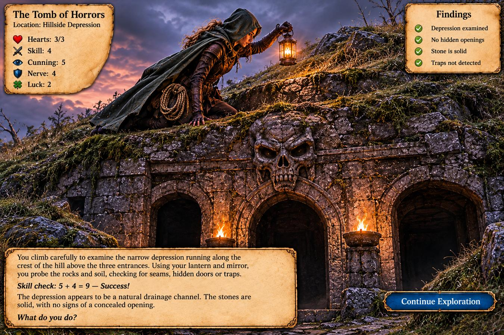
Hidden Stone Marker

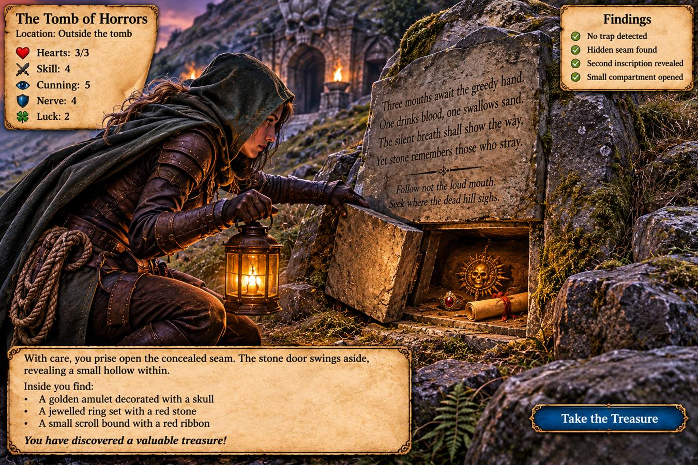
Hidden Compartment

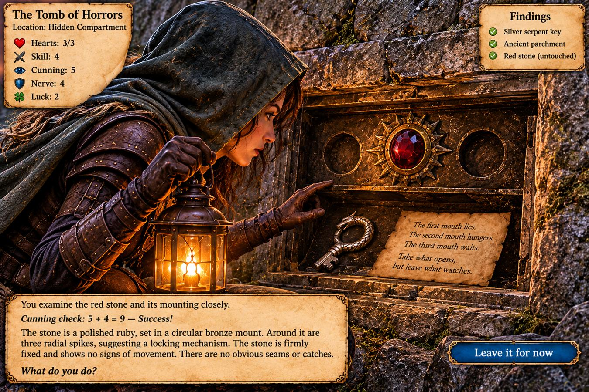
Ventilation Shaft

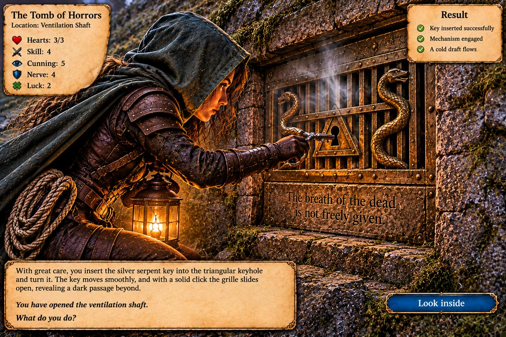
Right-Hand Passage

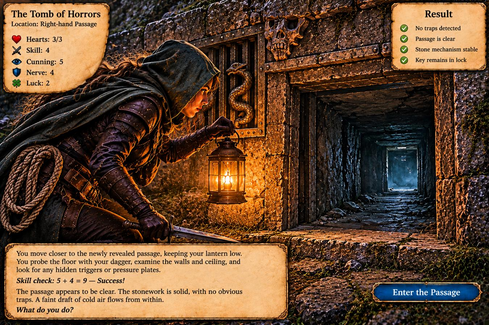
The Narrow Ledge

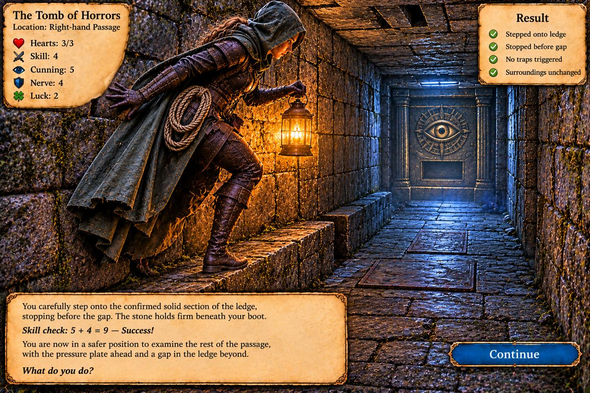
The Iron Ring

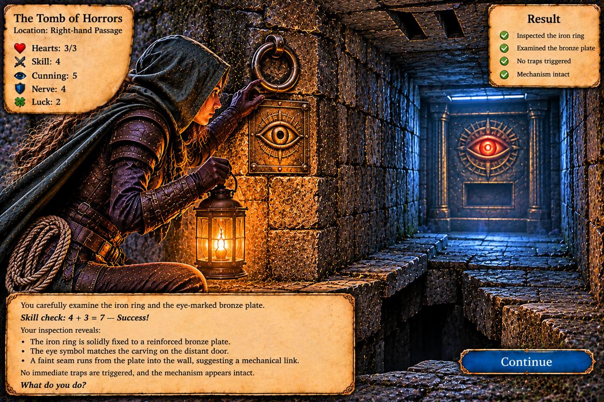
Turning the Iron Ring

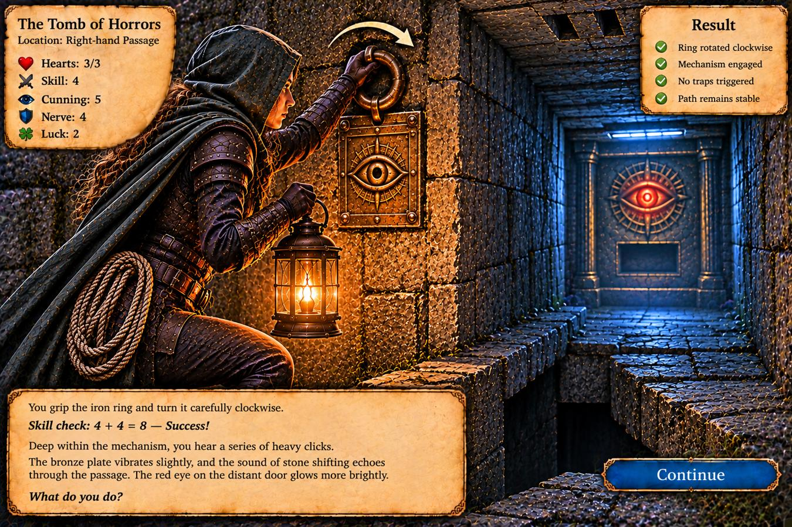
Crossing the Gap

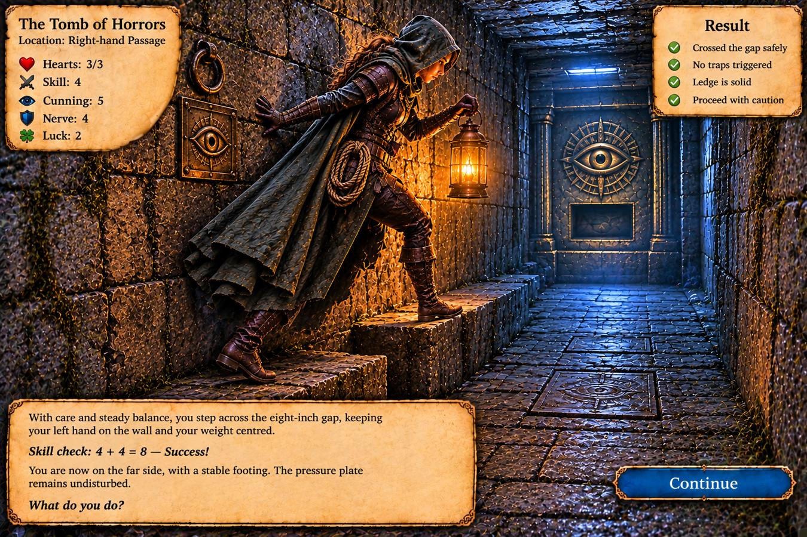
Far Side of the Ledge

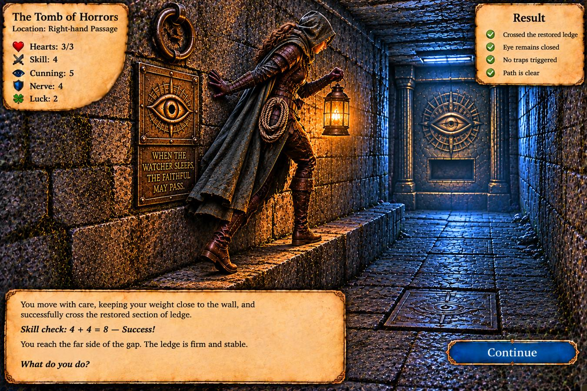
Room 01: Bronze Eye Door

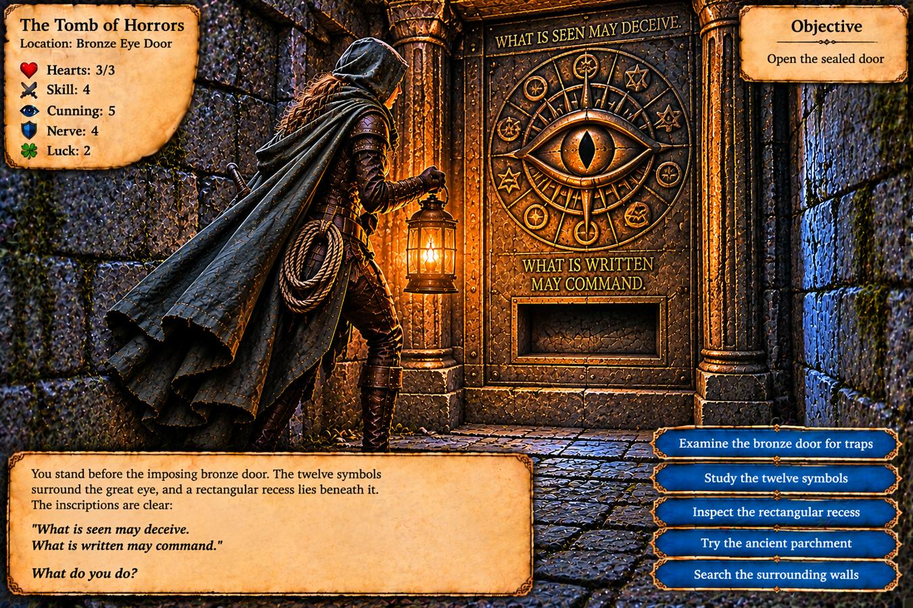
Twelve Bronze Symbols

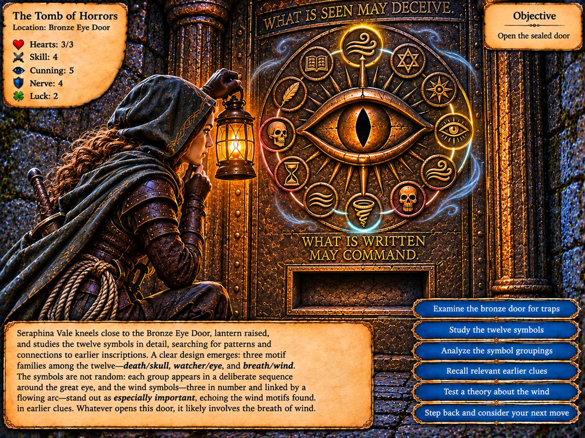
The Scribe’s Recess

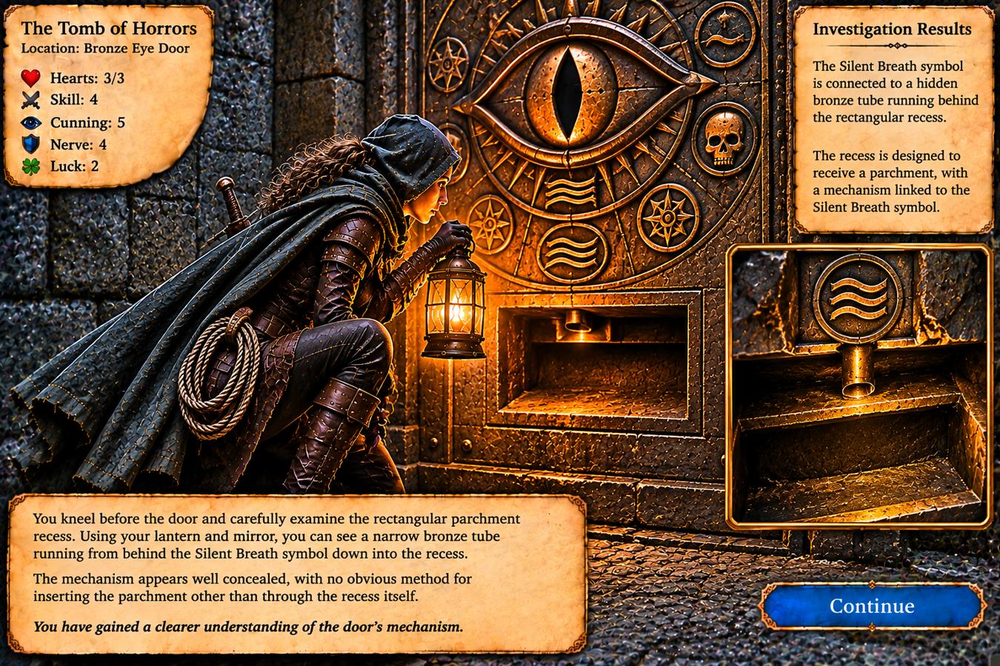
Clues & Puzzles
Three mouths
“The first mouth lies. The second mouth hungers. The third mouth waits.”
Stone marker
“Follow not the loud mouth. Seek where the dead hill sighs.”
Silver serpent key recovered. Red glass eye left untouched.
Hidden symbols
Skull · Eye · Wind — visible only in a mirror.
Ventilation shaft
Seven-second air pulses. Key opened hidden right passage and remains trapped in shaft grille.
Passage trap
Pressure plate below three ceiling slots. Turning the wall ring clockwise raised the collapsed ledge, shuttered the slots and closed the distant eye.
Bronze Eye Door
“What is seen may deceive. What is written may command.”
Twelve bronze symbols include skulls, eyes and three wind symbols.
Wind sequence
Rising Breath → Silent Breath → Falling Breath. The Silent Breath symbol bears “HUSH”.
Parchment recess
Connected to Silent Breath via bronze tube and shutter. “Let the words be heard before the breath is stilled.” No items inserted yet.
Seraphina Vale
Tomb-Raider
Hearts: 3/3 · Skill: 4 · Cunning: 5 · Nerve: 4 · Luck: 2/2
Inventory
Short sword, dagger, lantern, two oil flasks, 50 ft rope, chalk, ten iron spikes, thieves' tools, small mirror, one healing draught, ancient parchment.
Serpent key: left in ventilation shaft lock.
Position: At the Bronze Eye Door, unharmed.
Adventure Journal
- Approached the hillside and examined three tomb entrances.
- Discovered hidden marker compartment and took serpent key and parchment without disturbing red glass eye.
- Unlocked ventilation shaft and concealed right entrance, leaving key in lock.
- Detected passage pressure plate, ceiling slots and a ledge with a concealed gap.
- Turned wall ring clockwise; restored ledge and closed shutters.
- Crossed ledge safely and arrived at Bronze Eye Door.
- Examined the twelve symbols, three wind emblems and parchment recess.
Next: Investigate parchment and wind-symbol opening sequence. Door still sealed.
Music & sound effects
Start the tomb soundtrack below. The other tracks and SoundPads open in a new tab.
Vault of Terror
Music and ambience
- Vault of Terror for entering and exploring the tomb.
- Dungeon II: Mechanical for the pressure plate and iron-ring mechanism.
- Temple of the Eye for studying the Bronze Eye Door.
Sound effects
- Low Wind at the ventilation shaft.
- Scrape when a stone panel shifts.
- Arrow Trap if the pressure plate is triggered.
- Whispers while inspecting the Bronze Eye Door.
- Tomb Door: Open if the door opens during play.